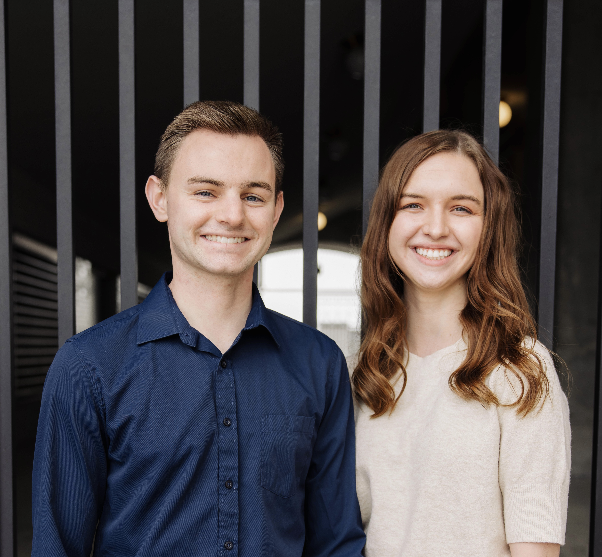
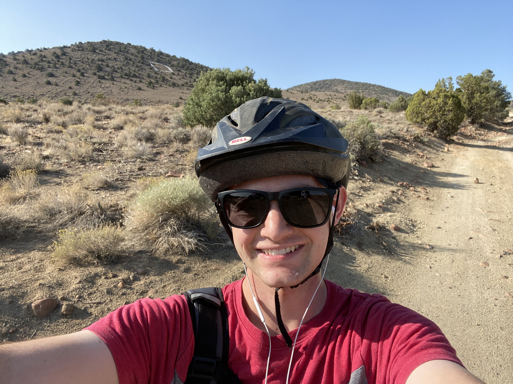

About the Developers
Kobey Workman
Kobey Workman grew up in rural Nevada in a town called Dayton, where he graduated high school and earned his Associate’s Degree. After a two year proselytizing church mission to Ecuador and Virginia, he began studying at Brigham Young University. Kobey is currently majoring in Mechanical Engineering and minoring in Computer Science. While at BYU, he met his wife, Kelsie, to whom he has been happily married for over a year. Kobey has a passion for coding and tinkering, and has always loved making games, from board games to computer games. He also enjoys getting outside by going mountain biking, hiking, and running.
 Oakley Workman
Oakley is a freelance graphic designer who currently lives in Dayton, NV.